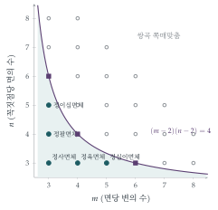

STEP III 1999, 문제 4
계속 읽기 전에 문제를 먼저 읽어 보자. 문제는 STEP Support Programme의 문제 데이터베이스에 있다: step.maths.org/questions/99-s3-q4
도입
정다각형(regular polygon)은 무한히 많다. 정삼각형, 정사각형, 정오각형처럼 변의 개수마다 하나씩 있다. 그렇다면 정다면체(regular polyhedron)도 무한히 많으리라 생각할 수 있다. 하지만 정다면체는 정확히 다섯 개뿐이다. 정사면체(tetrahedron), 정육면체(cube), 정팔면체(octahedron), 정십이면체(dodecahedron), 정이십면체(icosahedron)가 그것이다. 플라톤(Plato)은 이 중 넷을 원소(불, 흙, 공기, 물)에, 다섯 번째를 우주에 대응시켰다. 지금까지 쓰인 수학책 가운데 가장 큰 영향을 끼친 유클리드(Euclid)의 원론(Elements)은 이 밖에 다른 정다면체가 없다는 증명으로 끝맺는다. 케플러(Kepler)는 정다면체로 태양계의 모형을 만들기도 했다.
이 문제는 1750년에 오일러(Euler)가 발견한 놀라운 공식 하나로부터 이 분류를 단 몇 줄 만에 증명한다. 그 공식은 모든 볼록다면체(convex polyhedron)에 대하여 \(V - E + F = 2\)라는 것이다. 개수를 세는 공식이 도형에 관한 정리로 바뀌고, 수 \(2\)는 구의 지문과 같은 것으로 드러난다.
시작하기 전에
정육면체에서 오일러 공식을 확인해 보자. 꼭짓점, 모서리, 면은 각각 몇 개인가? 사각뿔에서는 어떠한가?
정육면체는 \(V = 8\), \(E = 12\), \(F = 6\)이고 \(8 - 12 + 6 = 2\)이다. 사각뿔은 꼭짓점 \(5\)개, 모서리 \(8\)개, 면 \(5\)개를 가지며 \(5 - 8 + 5 = 2\)이다. 이 공식은 구멍이 없는 다면체라면 아무리 불규칙하더라도 성립한다.
정다면체에서 각 면은 \(m\)개의 모서리를 가지고, 각 모서리는 두 면에 접한다. 이로부터 \(E\)와 \(F\) 사이에 어떤 등식이 얻어지는가? 마찬가지로 \(E\)와 \(V\) 사이에는 어떠한가?
모서리와 면의 접속 관계를 두 가지 방법으로 세어 보자. \(F\)개의 면은 각각 \(m\)개의 모서리를 가지고, 각 모서리는 (두 면에서 한 번씩) 두 번 세어지므로 \(mF = 2E\)이다. 마찬가지로 각 꼭짓점에는 \(n\)개의 모서리가 모이고 각 모서리는 두 끝점을 가지므로 \(nV = 2E\)이다. 이처럼 “같은 것을 두 가지 방법으로 세는” 기법을 이중 계산(double counting)이라고 한다.
차근차근 풀기
단계 1 \(F\)에 대한 공식
\(mF = 2E\)와 \(nV = 2E\)로부터 \(E = \frac{mF}{2}\), \(V = \frac{mF}{n}\)이다. 이를 오일러 공식에 대입하면 \[\frac{mF}{n} - \frac{mF}{2} + F = 2 \quad\Longrightarrow\quad F\,\frac{2m - mn + 2n}{2n} = 2 \quad\Longrightarrow\quad F = \frac{4n}{2m + 2n - mn}.\] 또한 \(4 - (n - 2)(m - 2) = 4 - (mn - 2m - 2n + 4) = 2m + 2n - mn = h\)이다. 따라서 \(F = \frac{4n}{h}\)이다.■
단계 2 \(m\)과 \(n\)은 어떤 값이 될 수 있는가?
\(m\)(면의 변의 수)과 \(n\)(한 꼭짓점에 모이는 면의 수)의 가능한 최솟값은 각각 얼마인가? 또 \(F > 0\)이므로 \(h\)의 부호는 어떠해야 하는가?
다각형은 적어도 \(3\)개의 변이 필요하므로 \(m \geq 3\)이고, 입체의 각 꼭짓점에는 적어도 \(3\)개의 면이 모여야 하므로 \(n \geq 3\)이다. \(F > 0\)이므로 \(h > 0\), 즉 \((n - 2)(m - 2) < 4\)이어야 한다. 두 인수가 모두 \(1\) 이상이므로 \((m - 2, n - 2)\)로 가능한 것은 \((1, 1)\), \((1, 2)\), \((2, 1)\), \((1, 3)\), \((3, 1)\)뿐이다.
다섯 가지 경우 각각에 대하여 \(h\), \(F\)를 차례로 구하고, \(E = \frac{mF}{2}\)와 \(V = \frac{mF}{n}\)을 계산하라. 각각이 어떤 입체인지 확인하라.
| \(m\) | \(n\) | \(h\) | \(F\) | \(E\) | \(V\) | 입체 |
|---|---|---|---|---|---|---|
| \(3\) | \(3\) | \(3\) | \(4\) | \(6\) | \(4\) | 정사면체 |
| \(3\) | \(4\) | \(2\) | \(8\) | \(12\) | \(6\) | 정팔면체 |
| \(4\) | \(3\) | \(2\) | \(6\) | \(12\) | \(8\) | 정육면체 |
| \(3\) | \(5\) | \(1\) | \(20\) | \(30\) | \(12\) | 정이십면체 |
| \(5\) | \(3\) | \(1\) | \(12\) | \(30\) | \(20\) | 정십이면체 |
가능한 경우는 이것뿐이므로 정다면체는 많아야 다섯 개이다. 그리고 다섯 개 모두 실제로 존재한다(유클리드가 각각을 작도하는 방법을 보였다).■
돌아보기
이중 계산. 모서리와 면, 모서리와 꼭짓점의 접속 관계를 두 가지 방법으로 세어 \(mF = 2E\)와 \(nV = 2E\)를 얻었다.
양수 조건에서 나온 부등식. \(F > 0\)이라는 단순한 조건이 무한히 많은 후보를 다섯 개로 줄였다.
존재성은 별개의 문제이다. 이 논증은 정다면체가 많아야 다섯 개임을 보여 줄 뿐이다. 각각이 실제로 존재한다는 것은 직접 작도하여 확인해야 한다.
숨은 수학
오일러는 1750년에 \(V - E + F = 2\)를 제시했지만 그의 증명에는 빈틈이 있었고, 이 공식에는 증명 시도와 반례와 수정이 이어진 흥미로운 역사가 있다. 가운데에 사각형 구멍이 뚫린 “액자” 모양 다면체는 \(V - E + F = 0\)이고, 두 정육면체를 한 꼭짓점에서 붙인 다면체는 \(V - E + F = 3\)이다. 임레 라카토슈(Imre Lakatos)는 이 역사를 바탕으로 수학적 개념이 반례를 통해 어떻게 다듬어지는지를 다룬 유명한 책 Proofs and Refutations(증명과 반박)를 썼다. 결론은 \(V - E + F\)가 위상수학의 느슨한 의미에서 곡면의 모양에만 의존한다는 것이다. 구로 변형할 수 있는 곡면에서는 \(2\), 원환면(torus, 도넛 모양)에서는 \(0\), 구멍이 \(g\)개인 곡면에서는 \(2 - 2g\)이다. 이 수, 곧 오일러 지표(Euler characteristic)는 늘이거나 구부려도 변하지 않는 성질을 연구하는 위상수학(topology)의 초창기 개념 가운데 하나였다.

구를 넘어서
\(h = 0\)이거나 \(h < 0\)이면 어떻게 될까? \((m - 2)(n - 2) = 4\)일 때는 해가 \((3, 6)\), \((4, 4)\), \((6, 3)\)의 세 개이다. 정삼각형 여섯 개, 정사각형 네 개, 또는 정육각형 세 개가 한 점에 모이면 각의 합이 정확히 \(360^\circ\)가 된다. 이것이 평평한 평면의 세 가지 정규 쪽매맞춤(tiling)으로, 욕실 바닥이나 벌집에서 볼 수 있는 무늬이다. 그리고 \((m - 2)(n - 2) > 4\)이면 한 꼭짓점에 모인 각의 합이 \(360^\circ\)보다 크다. 이는 평평한 평면에서는 불가능하지만 5.8 절의 쌍곡평면(hyperbolic plane)에서는 얼마든지 가능하다. 쌍곡평면의 정규 쪽매맞춤은 무한히 많으며, 그림 7.9.1에서 곡선보다 위에 있는 점마다 하나씩 있다. 에셔(Escher)의 Circle Limit(원의 극한) 목판화 연작은 그중 몇 가지를 그린 것이다. 그러므로 플라톤 입체의 분류는 사실 기하학 전체를 관통하는 삼분법(구, 평면, 쌍곡평면)의 첫 번째 경우인 셈이다.
대칭군
플라톤 입체의 대칭은 군(group)을 이룬다. 회전 대칭은 정사면체가 \(12\)개, 정육면체와 정팔면체가 \(24\)개(이 둘은 쌍대(dual)이다. 즉 면과 꼭짓점을 맞바꾸면, 곧 \(m \leftrightarrow n\)이면 서로 바뀐다), 정십이면체와 정이십면체가 \(60\)개이다. 위수가 \(60\)인 정이십면체군은 6.4 절에서 언급했듯이 5차 방정식을 거듭제곱근(radical)으로 풀 수 없게 만드는 “단순(simple)” 군이다. 펠릭스 클라인(Felix Klein)은 정이십면체를 5차 방정식의 풀이와 연결한 책 Lectures on the Icosahedron(정이십면체에 관한 강의, 1884)을 한 권 통째로 썼다.
사고 기술
같은 대상을 서로 다른 두 가지 방법으로 세고, 그 결과를 같다고 놓는다.
여기서 센 대상은 모서리가 면 위에 있는 (모서리, 면) 쌍의 집합이었다. 이중 계산은 조합론에서 가장 강력한 도구 가운데 하나이며, 제9장 곳곳에서 다시 등장한다.
더 도전하기
쌍대성. \(m\)과 \(n\)을 맞바꾸면 \(V\)와 \(F\)가 맞바뀌고 \(E\)는 변하지 않음을 보여라. 어떤 플라톤 입체끼리 서로 쌍대인가? 자기 자신과 쌍대인 것은 어느 것인가?
축구공. 전통적인 축구공은 정오각형 \(12\)개와 정육각형 \(20\)개로 이루어지며, 각 꼭짓점에 세 면이 모인다. 이중 계산과 오일러 공식을 이용하여 \(V - E + F = 2\)임을 확인하라. 더 일반적으로, 오각형과 육각형으로 이루어지고 각 꼭짓점에 세 면이 모이는 다면체는 언제나 오각형을 정확히 \(12\)개 가짐을 보여라.
원환면. “액자” 모양 다면체(사각형 구멍이 뚫린 사각 블록)를 만들어 \(V\), \(E\), \(F\)를 세어라. \(V - E + F = 0\)임을 확인하라.
꼭짓점에 모인 각. 정\(m\)각형의 한 내각은 \(180^\circ(1 - \frac2m)\)이다. 이러한 각 \(n\)개가 볼록 입체의 한 꼭짓점 둘레에 들어맞을(합이 \(360^\circ\)보다 작을) 필요충분조건이 \((m - 2)(n - 2) < 4\)임을 보여, 분류에 대한 두 번째 증명을 제시하라.
더 읽을거리
David Richeson, Euler’s Gem (Princeton University Press). \(V - E + F = 2\)의 역사와 그것이 어떻게 위상수학으로 이어졌는지를 다룬다. 식스폼(sixth form, 영국의 대학 진학 준비 과정) 학생에게 매우 좋은 책이다.
Imre Lakatos, Proofs and Refutations (Cambridge University Press). 오일러 공식과 증명의 본성에 관한 대화편이다.
H. S. M. Coxeter, Regular Polytopes (Dover). 정다면체와 그 고차원 친척들을 다룬 고전이다.